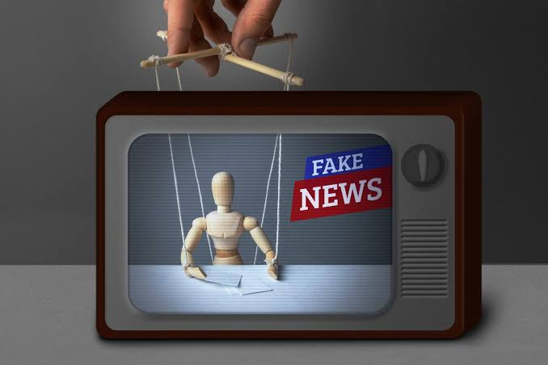
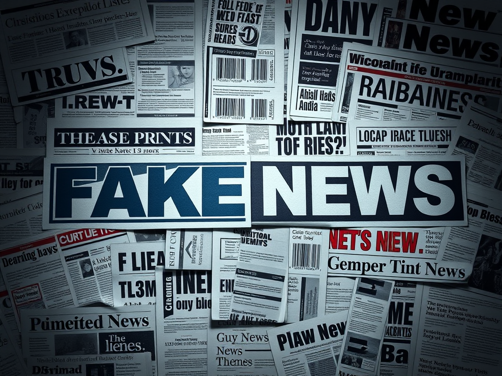

Critical Thinking and Media Literacy: Think Before You Believe

Introduction
Today, the internet and social media are important parts of our daily lives. We use them to communicate, learn new things and stay informed about what is happening around the world. However, not all the information we find online is true or reliable.
For this reason, critical thinking and media literacy are important skills that help us understand, analyze and evaluate the information we receive.
What Is Critical Thinking?
Critical thinking is the ability to analyze information, ask questions and make decisions based on facts and evidence. It means that we should not accept everything we hear or read without thinking about it first.
For example, when we read an interesting story on the internet, we should ask ourselves: Is this information true? Who published it? Is there enough evidence to support it?
What Is Media Literacy?
Media literacy is the ability to understand and evaluate information from different media sources, such as television, newspapers, websites and social media.
It helps us recognize the purpose of a message, understand different points of view and identify information that may be misleading.
Fake News and Misinformation
Fake news is false or misleading information presented as real news. It can spread quickly through social media and messaging applications.
Sometimes people share information without checking whether it is true. This can create confusion, fear and misunderstandings.
That is why we should always verify information before believing it or sharing it with other people.
How to Identify Reliable Information
There are several ways to identify reliable information:
- Check the source: Find out who published the information.
- Verify the date: Make sure the information is recent and relevant.
- Compare different sources: Look for the same information in other reliable websites.
- Check the evidence: See if the information includes facts, data or trustworthy references.
- Avoid sharing immediately: Take some time to analyze the content before sharing it.
My Opinion
In my opinion, critical thinking and media literacy are essential skills in today's digital world. We should learn to question information instead of accepting everything we see on the internet.
I also believe that everyone has a responsibility to avoid spreading false information. Before sharing a news story, we should take a moment to verify its source and content.
